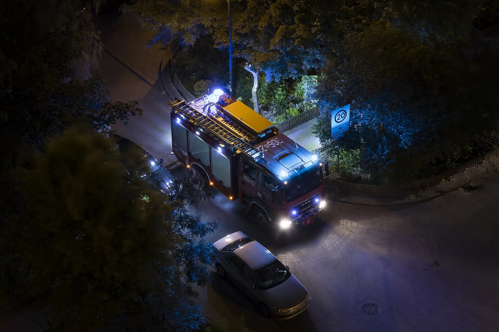

Program MSWiA: 140 tys. darmowych czujek dymu i czadu — kto dostaje, kto montuje
Programy · MSWiA
Ministerstwo Spraw Wewnętrznych i Administracji kupiło 140 tys. czujek dymu i czadu dla osób najbardziej narażonych na pożar i zatrucie czadem. Czujki przekazują strażacy PSP i druhowie OSP. Poniżej to, co o programie podały Komenda Główna PSP i urząd wojewódzki, oraz to, czego w ich komunikatach nie ma.


- Stan źródeł
- dwa komunikaty z lutego 2026 r. (Komenda Główna PSP z 6 lutego, Kujawsko-Pomorski Urząd Wojewódzki z 10 lutego), odczytane 21 listopada 2026 r.
Co ogłoszono
Pierwszy komunikat pochodzi z Komendy Głównej PSP: „6 lutego 2026 r. odbyła się konferencja prasowa ministra spraw wewnętrznych i administracji Marcina Kierwińskiego oraz komendanta głównego Państwowej Straży Pożarnej nadbryg. Wojciecha Kruczka, poświęcona ogólnopolskiej akcji dystrybucji czujek dymu oraz tlenku węgla, zakupionych przez MSWiA.” Cel akcji to według komunikatu zwiększenie bezpieczeństwa obywateli i ograniczenie liczby ofiar pożarów i zatruć czadem.
Drugi komunikat opublikował Kujawsko-Pomorski Urząd Wojewódzki w Bydgoszczy: „Do najbardziej potrzebujących trafi 140 tys. darmowych czujek dymu i czadu, zakupionych w ramach Programu Ochrony Ludności i Obrony Cywilnej.” Urząd łączy zakup z nowymi przepisami: „W przygotowaniu na wprowadzenie tych przepisów MSWiA zakupiło 140 tys. czujek dymu i czadu w ramach Programu Ochrony Ludności i Obrony Cywilnej.” Samych przepisów ta strona nie omawia.
Program w liczbach
Koszt urząd wojewódzki podaje jednym zdaniem: „Koszt ich zakupu wyniósł 5 mln zł.”
Darmowe czujki MSWiA: dane z komunikatów
| Co | Dane z komunikatu | Kto podał i kiedy |
|---|---|---|
| Liczba czujek | 140 tys. czujek dymu i czadu | Kujawsko-Pomorski Urząd Wojewódzki, 10.02.2026 |
| Koszt zakupu | 5 mln zł | Kujawsko-Pomorski Urząd Wojewódzki, 10.02.2026 |
| Z jakich środków | Program Ochrony Ludności i Obrony Cywilnej | Kujawsko-Pomorski Urząd Wojewódzki, 10.02.2026 |
| Kto przekazuje i uczy obsługi | strażacy PSP i druhowie OSP | Komenda Główna PSP, 06.02.2026 |
| Kto montuje | strażacy: „w wielu przypadkach” pomagają w instalacji (KG PSP), w domach potrzebujących zamontują czujki bezpłatnie (urząd wojewódzki) | Komenda Główna PSP, 06.02.2026; Kujawsko-Pomorski Urząd Wojewódzki, 10.02.2026 |
| Szkolenie domowników | tak, w zakresie użytkowania czujek | Kujawsko-Pomorski Urząd Wojewódzki, 10.02.2026 |
Źródło: komunikaty Komendy Głównej PSP (06.02.2026) i Kujawsko-Pomorskiego Urzędu Wojewódzkiego (10.02.2026) na gov.pl. Bez obliczeń własnych.
Kto dostaje czujki
Komenda Główna PSP opisuje adresatów tak: „Czujki trafią w szczególności do osób najbardziej narażonych na tego typu zagrożenia – seniorów, osób z niepełnosprawnościami oraz mieszkańców znajdujących się w trudnej sytuacji życiowej.”
Urząd wojewódzki podaje dłuższą listę: „Strażacy bezpłatnie zamontują je w domach najbardziej potrzebujących: seniorów, osób z niepełnosprawnościami, najuboższych, osób żyjących w budynkach o podwyższonym ryzyku pożarowym.” Obie listy zaczynają się od seniorów i osób z niepełnosprawnościami. Urząd dodaje najuboższych i mieszkańców budynków o podwyższonym ryzyku pożarowym, Komenda Główna — osoby w trudnej sytuacji życiowej.
Kto montuje
Według Komendy Głównej PSP: „W ramach akcji strażacy PSP i druhowie OSP nie tylko przekazują urządzenia, ale również edukują mieszkańców, pokazując, jak działają czujki, gdzie je zamontować i jakie zagrożenia pomagają wykryć.” Dalej komunikat dodaje: „W wielu przypadkach strażacy pomagają także w ich instalacji.” Urząd wojewódzki zapowiada: „Domownicy zostaną również przeszkoleni w zakresie odpowiedniego użytkowania czujek.”
Akcja „Czadowa Straż” z 5 lutego
Ten sam komunikat urzędu wojewódzkiego opisuje akcję Państwowej Straży Pożarnej z Radiem Zet: „W każdej komendzie miejskiej i powiatowej przygotowano 15 czujek, które 5 lutego można było otrzymać za darmo na hasło „czadowa straż”.” Wynik podaje tak: „Dzięki akcji jednego dnia udało się przekazać ponad 5 tys. czujek.” Komunikat nie wyjaśnia, czy te czujki wchodzą w pulę 140 tys., dlatego tych liczb nie dodajemy do siebie.
Czego komunikaty nie podają
W obu komunikatach, odczytanych 21 listopada 2026 r., nie znaleźliśmy:
- zasad składania zgłoszeń ani adresu, pod który zgłasza się osoba potrzebująca czujki,
- podziału 140 tys. czujek na województwa i powiaty,
- liczby czujek przekazanych do dnia dzisiejszego — komunikaty są z lutego 2026 r.,
- terminu zakończenia akcji.
Tych informacji nie uzupełniamy z innych źródeł ani z domysłu. Jeśli szukasz czujki z programu, jedyna wskazówka z komunikatów to ta, że przekazują je strażacy PSP i druhowie OSP; sensownym pierwszym adresem do zapytania jest więc lokalna jednostka straży. To nasza sugestia, nie zapis komunikatu.
Co dalej w serwisie
- Liczby o zdarzeniach z tlenkiem węgla w latach 2018–2025: Czad w liczbach.
- Twoja gmina albo powiat rozdaje czujki? Zasady zgłaszania programu są w O serwisie. Program trafia do serwisu dopiero z komunikatu urzędu, z datą i adresem źródła.